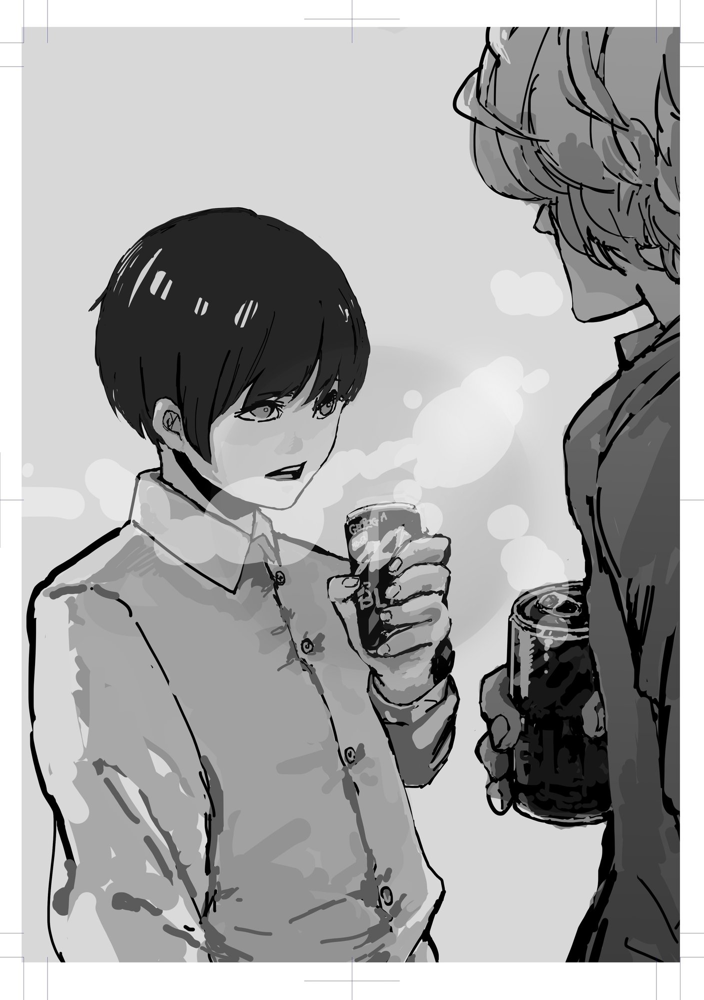

第七章 労働なき世界
「八十億人全員がニート・・・」
「そう、それが労働なき世界や。誰も強制されることなく、自分の意志で好きなことを好きなだけやる。一人でゲームする奴もおれば、一日中誰かのために貢献してる奴もおる。でも、やめたいと思ったら、すぐにやめられる」
最初、ニケに話しかけられたときは、ニケの話はなんの根拠もない与太話だと思っていた。でも、僕の疑問はすべてニケに鮮やかに反論され、いまではニケの話を否定することはむずかしい。
もし、ニケの話が本当なのだとすれば、この世界はきっと間違っている。
将来のために嫌々勉強をさせられ、無意味に受験勉強に消耗し、大人になってからも権力者の命令に逆らうことができず、無意味な労働に身をすり減らす。労働のせいで僕たちは精神を病み、環境を破壊し、未来の子どもたちに退屈な世界を残そうとしている。こんなにバカバカしいことはない。みんなが好きなことをやれば、社会は幸福に満ち溢れるのだから。
もし、ニケの話が本当なのだとすれば。
「さて、これでアンチワーク哲学の大枠は伝えたわけやけれど、一気に話したからちょっと混乱してるやろ？」
「え、まぁ、そうだね」
「まぁちょっとコーヒーでも飲もうや」
僕はニケに連れられ、公園の外に見えている自販機へ向かった。気づかないうちに雨はやんでいて、太陽が遠慮がちにこちらをのぞいている。芝生は宝石が散りばめられたように輝いていた。
「ブラックか？」
「うん」
「中学生のくせに、生意気やな」
「ニートのくせに、奢ってくれるの？」
「あほか。缶コーヒー代くらいニートでも持ってるで」
ニケから手渡されたブラックのコーヒーは、ほんのり温かくて、あたりの空気がひんやりしはじめていることを感じさせてくれる。
ニケの話は完全に理解したわけではない。いまも頭の中をいろんな言葉が渦巻いて、整理されるのを待っている。
労働は悪。本当なのだろうか。この缶コーヒーも、きっと労働によってつくられている。だったら缶コーヒーも悪なんだろうか？ 労働がなくなった世界では、この缶コーヒーはつくられないのだろうか？ それとも、誰かがつくり続けるのだろうか？
「この缶コーヒーってさ・・・」
「『お金や労働がなくなった世界でもつくられるか』・・・か？」
相変わらずニケは心を見透かすようなことを言う。もういちいち驚くこともない。
「うん」
「わからんけど、つくってくれるんとちゃうか？」
ニケはいつでも答えをくれるわけではない。曖昧なことも言うし、わからないことも多い。哲学者ってなんでも知っている人のことなのかと思っていたけれど、実際は違った。むしろなにも知らない人こそが、哲学者なのかもしれない。
そうだ。わからない方がきっといいんだ。人間が本当に自由になったときに、缶コーヒーをつくり続けるのかどうかなんて、わからない方がいい。だってそれが人間として生きるということなんだから。
「わからないほうがいいかもね」
「ん？ どういうことや？」
「絶対に缶コーヒーをつくる人が現れるとわかってるなら、それはもう缶コーヒーをつくる人を支配しているのと同じじゃない？」
「え？」
「だって、人間がなにを欲望するかわからないって、ニケは言ったよね？ それで仮に缶コーヒーがつくられないのだとしても、誰かが強制されるよりはいい。ニケならそう言うと思っていたけど・・・」
ニケは僕の言葉を受け止めることなく、ただ感じているようだった。そんなにおかしなことを言っただろうか？
「そうか、君は・・・」
「え？」
「・・・せやな。缶コーヒーがなくても、なにか違うものを飲めばええか」
ほんの少しだけ間を置いてから、ニケはいつもの調子に戻った。
「そう。自分でお茶を淹れて、水筒に入れて持って行けばいいよね」
「でも、水筒がなかったらどうする？」
「うーん、竹筒でもなんでもいいんじゃない？」
「そんなん、つくり方知らんわ」
「わからなかったら検索してみなよ」
僕の返答に、ニケは声を出して笑った。
「・・・少年、言うようになったな」
「ちょっとニケの喋り方がうつったかもね」
缶コーヒーが飲めないと、少し不便かもしれない。でも、誰かが命令に強制的に従わせられるくらいなら、ちょっとぐらい不便なほうがマシだ。
それに・・・
「それに僕は缶コーヒーも水筒も誰かがつくってくれると信じてるよ」
「そうか？」
「たぶんね。僕がティッシュを渡したのはニケにお願いされたからだけど、あれは僕自身の意志でもあった。だから、缶コーヒーつくるのも同じだと思う。それに、もし誰もつくらなかったら僕がつくるよ」
「なんやそれ。さっきまで『働きたくない』って喚いてた不登校児が言っても説得力ないで」
「たしかにそうだね」
僕たちは同時に笑って、同時にコーヒーを口にした。
コーヒーは減っていき、会話も減っていった。僕たちは無理に話そうとはしなかったし、急いで飲み干そうともしなかった。
次にニケが口を開いたのは、コーヒーを飲み終えた後だった。
「少年、別に俺の話はぜんぶ信じなくてもええで」
「そうなの？」
「そうや。所詮は俺の意見にすぎないわけや。根拠はあるけど、正しいとは限らん。逆に言えばな、親や先生が言ってることも正しいとは限らへんねんで。だからな、学校とか、受験とか、労働とか、お金とか、そういうもんに少年はこれから立ち向かうかもしらんけど・・・あんまり気負わんでもええ。あとな・・・」
めずらしくニケの言葉に迷いがある。僕になにかを伝えたいけど、どう言っていいのかわからず、手探りで言葉を探している。そんな風に感じた。
「少年、自殺しようと考えたことあるやろ？」
「え？ どうして知ってるの？」
「まぁこれくらいの歳なら誰しも一回くらい考えるねん。実際に自殺する奴は少ないやろけど」
「そっか」
「一回自殺した気分になってみ？」
「どういうこと？」
「死ぬくらいなら、ニートになることも、大人の言うことに逆らうことも、屁でもないってことや」
一回自殺した気分になってみる。ニケらしい不謹慎なアドバイスだ。でも、それもいいかもしれない。
「わかったよ」
「じゃあな。そろそろ俺は帰るわ。少年はどうするん？」
「んー。わからない。とりあえず夜までには家に帰るよ」
「そっか。まぁ俺はこっちからは離れるけど、また会いにきてくれや」
「こっち？」
「あぁ・・・」
ニケはニヤニヤしながら言った。
「この世界ってことや」
「どういうこと？」
「ずっと黙っててんけどな、俺はこの世界の人間じゃないねん。あの世から派遣されてきた預言者や」
「は？」
「俺は山奥で修行を重ねた結果、神との合一を果たし、現世から離れた。今日は真理を少年に伝える預言者として、この世界に現れただけであって、この姿は仮初なんや」
ニケはわけがわからない設定を、まるでアニメのアナウンスのように語る。もちろん、そんな説明で納得できるわけがない。
「関西弁の預言者なんているの？」
「関西弁はな、仮初の言葉や。普段は標準語で喋ってるねんけど、預言者のときだけ関西弁やねん」
預言者になったら関西弁？ さすがに設定が意味不明すぎる。
「漫画の読みすぎじゃないの？」
「どうやろ。俺は映画の方が好きやで。まぁ、信じるか信じないかは少年に任せるわ」
「信じるわけないじゃん」
「まぁごめん、半分は嘘や」
「ぜんぶ嘘でしょ」
「ほな、またな」
ニケは公園の端に停まっていたスーパーカブに乗って、走り去って行った。
とことん議論して、疑問を解消しようと思っていたけれど、結局ニケは最後にわけのわからない疑問を残していった。でも、その疑問はすぐに雲のように消えていった。ニケのユーモアには、悔しいけれど笑わされてしまう。信じるはずのない与太話を臆面もなく言い放つユーモアに。
ニケがいなくなった公園からは、若い母親も、スーツ姿の女性も姿を消していた。無理して空にしたコーヒーの缶を持った僕だけが公園に残されている。
気づけば時計は一七時。とっくに学校から親に連絡が入っている頃だ。きっと先生にも、親にも心配をかけている。
再び僕はベンチに腰かけて、遅めのランチを楽しむことにした。お弁当の蓋を開ければ冷めきった唐揚げとハンバーグが視界に入る。
そういえばニケは「食欲なんかたいしたことない」って言ったっけ？ たしかに、長い時間を話し込んでいたけれど、なぜか空腹感はない。それでも、僕は食べることにした。
お母さんが弁当箱に詰めた優しさは、冷めていてもずっと温かく感じられた。